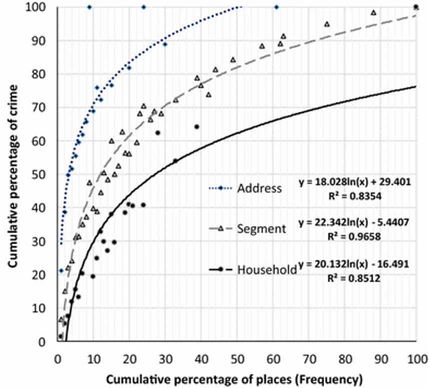
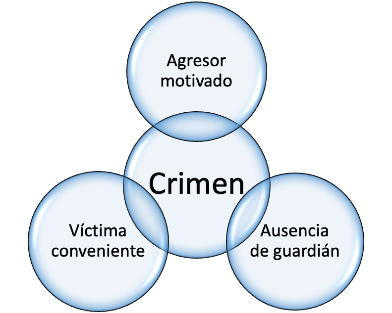
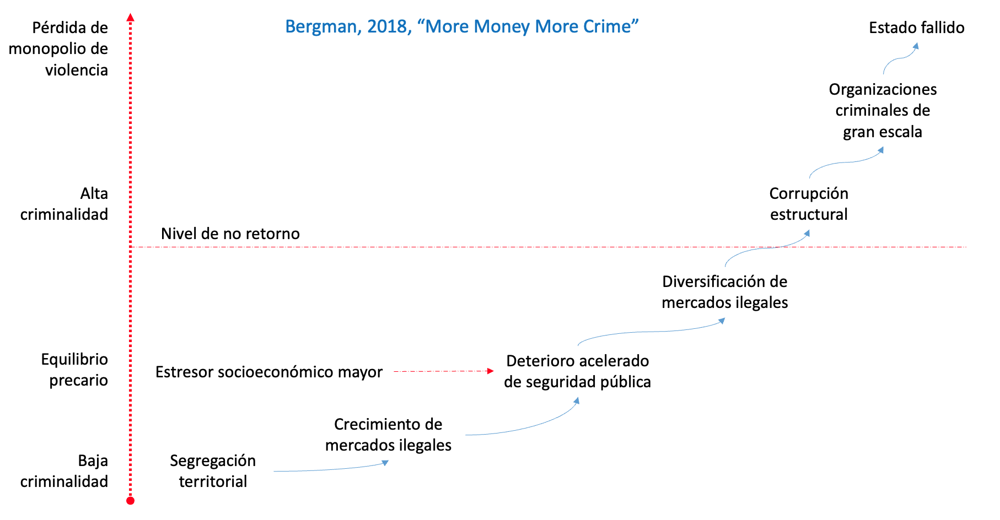
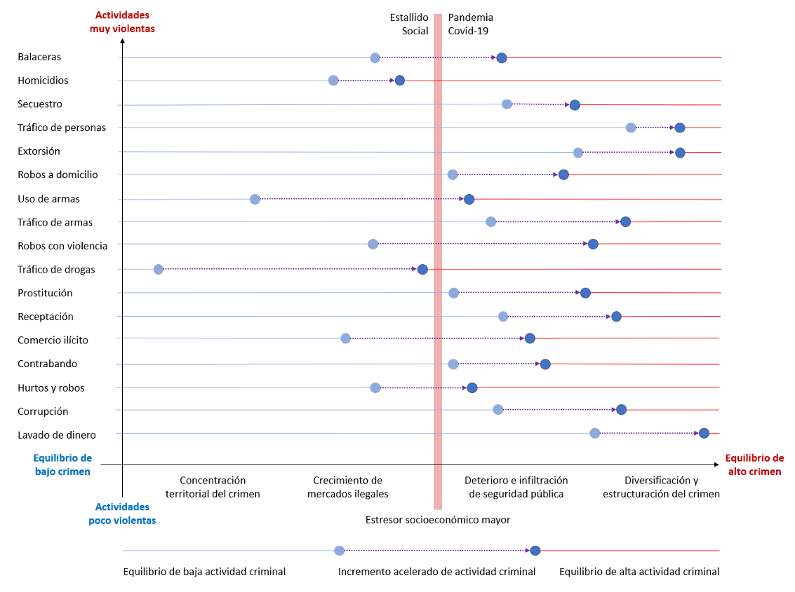

1 Marco de Referencia
1.1 Corrientes Pincipales de la Criminología
El comportamiento criminal a nivel individual como una desviación de la normalidad Análisis de las características - sexo, educación, nivel socioeconómico, entre otros -, influencia familiar y experiencias de vida de los sujetos que desarrollan carreras criminales (Harris, 1977; Pratt y Cullen, 2005; Travers y Howard-Wagner, 2013).
Racionalidad económica del crimen. Decisiones de costo -función del riesgo e intensidad de castigo) y beneficio (ingreso) de cometer un crimen; y también las condiciones de fomento y control del comportamiento criminal que en forma agregada pueden conducir a equilibrios criminales de menor o mayor intensidad (Fender, 1999; Bergman, 2019).
Influencia de características del territorio sobre la concentración geográfica de actividades criminales.
- Reproducción de comportamientos criminales en barrios socialmente desorganizados (Kubrin y Mioduszewski, 2019; Sampson y Grooves, 1989),
- Condiciones contextuales que generan oportunidades para la realización de crímenes (Kennedy y Forde, 1990; Olaghere y Lum, 2018).
1.2 Integración de Teorías Criminológica

1.3 Ley de la Concetración Espacial del Crimen
Empíricamente se ha observado que un alto porcentaje de los crímenes (50%) se concentra en una pequeña fracción (3% - 8%) de las calles de una ciudad (Sherman, 1989)

Esto se ha confirmado tanto en países occidentales industrializados (Weisbrud, 2015) como en América Latina (Chainey et al., 2019; Jaitman y Azenjam, 2016; Ortega et al, 2015).
1.4 Teorías de Oportunidad del Crimen
Teoría de actividades rutinarias (Cohen y Felson, 1979) probabilidad de encuentro entre agresor y víctima en situación de vulnerabilidad.

Relaciones espaciales complejas entre:
- Residencia de víctima
- Guardianes en el hogar
- Residencia del agresor
- Lugares propicios al crimen
- Patrones de movilidad
- Sistemas de transporte
Diversidad geográfica de fenómenos criminales (Frank et al., 2011)
1.6 Equilibrio Criminal Inestable en América Latina

1.7 Evolución de las manifestaciones territoriales de criminalidad en Chile:
Efectos del estallido social y de la pandemia de Covid-19.
La delincuencia y la sensación de victimización son problemas persistentes en Chile y América Latina (ENUSC, 2016). Este continente es el más violento del mundo, con altos niveles de violencia armada, un poder creciente de las organizaciones ilegales y capacidades limitadas de control y disuasión de los Estados. En Chile, se estima que el costo de la delincuencia asciende a 410.000 pesos por habitante, equivalente al 2,8% del PIB, siendo el cuarto mayor en el continente (Jaitman et al, 2017). Más allá de cualquier estimación económica, este fenómeno tiene un costo incalculable para las personas, en particular cuando son afectadas por la pérdida de seres queridos o en su integridad física y/o moral. Además, los trastornos políticos y sociales generados por el crecimiento y diversificación de actividades criminales puede generar riesgos estructurales para la seguridad pública y la estabilidad democrática (Bergman, 2019). Diversas disciplinas y teorías han desarrollado perspectivas complementarias para analizar fenómenos criminales. Primero, la investigación del comportamiento criminal a nivel de individuos como una desviación de la normalidad se ha enfocado tradicionalmente en el análisis de las características (sexo, educación, nivel socioeconómico, entre otros), influencia familiar y experiencias de vida de los sujetos que desarrollan carreras criminales (Harris, 1977; Pratt y Cullen, 2005). Segundo, estudios que se enfocan en la influencia de características del territorio sobre el comportamiento de grupos sociales, y sea en términos de la reproducción de comportamientos criminales en barrios socialmente desorganizados (ref), o identificando condiciones contextuales que generan oportunidades para la realización de crímenes (ref). Tercero, modelando la racionalidad microeconómica del crimen en términos de decisiones de costo (en función del riesgo e intensidad de castigo) y beneficio (ingreso) de cometer un crimen (refs); y también las condiciones de fomento y control del comportamiento criminal que en forma agregada pueden conducir a equilibrios criminales de menor o mayor intensidad (Fender, 1999).
Esta documento plantea desde el segundo tipo de estudios, correspondiente a la criminología geográfica y ecológica, y además incluye elementos de los otros dos, para complementar el marco de análisis de procesos de cambio de equilibrio criminal y aportar observaciones etnográficas para contextualizar este análisis en barrios vulnerables de Chile. En este ámbito, la teoría de los Efectos de Barrio (Neighborhood Effects; Sampson et al, 2002; Galster, 2012) ofrece un marco teórico amplio que permite integrar múltiples perspectivas y niveles de análisis para el estudio de la influencia del entorno geográfico en las oportunidades de vida de las personas, incluyendo su eventual compromiso en actividades criminales. Los Efectos de Barrio podrían influir en la salud, desempeño educativo y laboral, relaciones interpersonales y otros, pero los efectos de contagio de comportamientos criminales y consumo de drogas, entre pares del vecindario - como agravante de la reproducción familiar - son particularmente significativos y recurrentes en distintos casos de estudio (Case & Katz, 1991; Graif et al, 2014; entre otros). En este sentido, la teoría de los Efectos de Barrio es ampliamente coincidente con la teoría de la Desorganización Social, respecto a la existencia de condiciones ecológicas de vulnerabilidad socioeconómica que podrían incrementar la exposición al crimen (ref).
La teoría de la Desorganización Social (Shaw y McKay, 1942) fue uno de los primeros intentos contemporáneos para explicar por qué determinadas condiciones de vida a nivel de comunidades podían incentivar comportamientos criminales en sus miembros. Diversos estudios en esta línea, desarrollados principalmente en EE.UU. han vinculado la desorganización social con altas densidades de población, movilidad residencial, diversidad étnica, carencia material, inestabilidad familiar, carencia de capital social y debilidad de redes interpersonales. Estas condiciones reducirían la efectividad de los mecanismos de control social e incentivarían la adopción de comportamientos criminales (Engelen et al., 2016; Collazos et al., 2019; Sampson y Groves, 1989; Sampson, Raudenbush y Earls, 1997). En contraparte, cabe advertir que el origen de estos problemas radica en injusticias estructurales que reproducen la pobreza y la delincuencia a través de desigualdades de oportunidad, inseguridad social y sesgos del sistema penal (Wacquant, 2008).
Estudios más recientes en el marco de los Efectos de Barrio han expandido el espectro de análisis geográfico, considerando redes de barrios en las que circulan individuos desarrollando sus actividades cotidianas (Graif et al, 2014). De este modo se observa una gran heterogeneidad de exposición al crimen en contextos no-residenciales, diferenciando las experiencias de individuos que residen en un mismo barrio. Desde este ángulo, los Efectos de Barrio convergen conceptualmente con la teoría de las Actividades Rutinarias, otra línea principal de la criminología ecológica, que analiza la distribución espacio-temporal de las oportunidades para delinquir.
La teoría de las Actividades Rutinarias (Cohen y Felson, 1979) se enfoca en el análisis de la localización de las oportunidades para delinquir. Esta teoría explica la actividad criminal contra personas o lugares a partir de la interacción de tipos de actores: delincuentes motivados, objetivos vulnerables y (ausencia de) guardianes capaces, sean estos agentes de la ley, vecinos o propietarios (Bottoms & Wiles, 1997). Por ejemplo, los robos a residencias ocurren con mayor frecuencia en períodos de ausencia de sus ocupantes (Cohen y Cantor, 1981). Asimismo, la concentración de equipamientos criminógenos, como bares, supermercados y estaciones de servicio, se asocia a tasas locales de criminalidad más altas que en áreas residenciales de la ciudad (Bernasco y Block, 2011; Jones y Pridemore, 2019) Las calles con altos flujos de personas y muchos objetivos potenciales suelen tener mayores riesgos de delincuencia, debido a la elevada probabilidad de interacción entre delincuentes y víctimas potenciales (Bernasco y Luykx, 2003; Beavon et al, 1994).
Las distintas teorías criminológicas mencionadas aportan perspectivas complementarias – individuales o territoriales, sicosociales o económicas - que pueden ser integradas para analizar fenómenos criminales multidimensionales y complejos. Diversos estudios han mostrado que variables territoriales correspondientes a la teoría de las actividades rutinarias tienen efectos más fuertes y consistentes en los patrones de concentración de la delincuencia, pero al mismo tiempo demuestran efectos relevantes de variables que representan condiciones de desorganización social (Garreton, Dammert, Berroeta y Sanchez, en revisión; Jones y Pridemore, 2019; Weisbrud, 2012). Empíricamente se ha constatado que un alto porcentaje de los crímenes se concentra en una pequeña fracción de las calles de una ciudad (Sherman, 1989), lo que puede explicarse por la concentración de oportunidades para delinquir en barrios con alta afluencia de público y por condiciones de desorganización social en barrios socialmente vulnerables . Existe amplia evidencia internacional que confirma esta afirmación, tanto en países occidentales industrializados (Weisbrud, 2015) como en América Latina (Chainey et al., 2019; Jaitman y Azenjam, 2016; Ortega et al, 2015).
En Chile, diversas investigaciones han generado evidencia relevante acerca de procesos criminales, con enfoques disciplinarios específicos. De la Fuente et al (2011) demostró que la frecuencia de delitos contra la propiedad varía en función de factores ecológicos como la pobreza, desempleo, densidad de población, eficacia policial y otros, mediante un análisis econométrico de un panel de 13 Regiones de Chile en el período 1990-2008. Un análisis más reciente (FK Economics, 2019), con datos de corte transversal para el año 2019 y agregados a nivel comunal, también reporta correlaciones significativas de éstos y otros factores con un espectro más amplio de delitos, aunque presenta discrepancias importantes con el anterior en cuanto a metodología y resultados. Baloian et al (2017) desarrollaron un modelo predictivo de diversos delitos contra la propiedad, basado en un análisis microgeográfico de variables de contexto. Ortega (2014), aporta una aguda observación etnográfica de procesos de reproducción local de una subcultura de violencia, criminalidad, alcoholismo y drogadicción en una comuna del Gran Santiago. Este estudio en profundidad describe lúcidamente las narrativas de adolescentes que aspiran a desarrollar carreras delictuales, junto a sus pares del barrio. Evitando estigmatizarlos, estos casos sustentan una crítica estructural a una sociedad que ofrece escasas posibilidades de movilidad social a través de la educación y el empleo formal (Espinoza et al, 2017), que tolera altos niveles de segregación en sus ciudades (Garreton et al, 2020) y que criminaliza la pobreza a través de los sistemas policial y penal (ref).
Analizando esta evidencia, consideramos pertinente desarrollar un análisis amplio y contingente de la criminalidad territorial en Chile. Existen indicios preocupantes de diversificación y sofisticación que sugieren un fortalecimiento de actividades criminales (PDI, 2018). De aquí en adelante, utilizaremos el concepto de “actividad criminal” para referirnos a un conjunto de acciones ilegales, cuyo objetivo es generar ingreso, que son realizadas por actores heterogéneos, descentralizados y coordinados a través de mercados ilegales. En otro nivel, reservaremos el término “organización criminal” para estructuras criminales de mayor escala, que realizan actividades criminales y en ocasiones actividades legales, por ejemplo los carteles latinoamericanos de narcotráfico o las mafias de EE.UU., Italia y otros países (Paoli, 2014). La investigación de esto último escapa a los objetivos y metodologías de este proyecto.
Para analizar la evolución de las actividades criminales, es necesario complementar el marco teórico hasta aquí presentado con teorías que abordan este fenómeno desde un punto de vista de procesos históricos en países latinoamericanos. Una paradoja notable en América Latina ha sido el aumento paralelo del crecimiento económico y de los niveles de inseguridad y actividad criminal, al contrario de lo observado en países industrializados (Bergman, 2019). Aunque existen situaciones diversas en distintos países, durante las últimas tres décadas se ha constatado una considerable expansión económica en este continente, junto a una importante reducción de la pobreza y en menor medida de la desigualdad (Amarante et al, 2016). Sin embargo, no se ha observado un fortalecimiento concomitante de las capacidades estatales de seguridad civil y social. Así, esta paradoja del desarrollo latinoamericano se explicaría por equilibrios de alta criminalidad, generados por oportunidades económicas crecientes en mercados ilícitos e ilegales, ante el desarrollo mucho más lento de capacidades investigativas y disuasivas en los sistemas policiales y judiciales (Bergman, 2019). Los diferentes niveles de actividad criminal observados en distintos países latinoamericanos pueden entenderse como equilibrios múltiples, que resultan del comportamiento agregado de individuos que toman decisiones racionales de beneficios y costos de cometer crímenes, sopesando el ingreso esperado con la probabilidad y consecuencias de ser castigados (Fender, 1999).
Los procesos de transición de equilibrios de baja a alta actividad criminal observados en países de América Latina desde la mitad del siglo XX permiten delinear un sendero que consta de seis pasos (Bergman, 2019). Primero, la heterogeneidad geográfica de oportunidades económicas y capacidades disuasivas, que permite la intensificación de actividades criminales en territorios particulares. Segundo, un equilibrio inestable en niveles intermedios de actividad criminal, en el que el Estado lucha por contener el crecimiento de mercados criminales. Tercero, un estresor mayor que desestabiliza este equilibrio precario, por ejemplo, el impacto que tuvo el tráfico de drogas ilegales en México. Cuarto, un deterioro acelerado de la seguridad pública, cuando las capacidades de organización criminal empiezan a superar y/o a corromper las capacidades de disuasión estatal. Quinto, la diversificación de actividades criminales en una amplia gama de mercados ilícitos e ilegales, incluyendo extorsiones y secuestros, y la eventual estructuración de organizaciones criminales de gran escala. Sexto, un equilibrio de alta actividad criminal, en el que el Estado es incapaz de recuperar el monopolio de la violencia (Op. Cit.). Desde una perspectiva de política pública territorial, es clave evitar la transición de situaciones en que la disputa violenta por mercados ilícitos emergentes, generalmente de drogas, escala a la diversificación de fuentes de ingreso criminal con actividades extremadamente violentas como la extorsión y el secuestro (Bergman, 2018).
Aunque el narcotráfico es un elemento clave en la transición hacia equilibrios de alta criminalidad, las actividades criminales pueden abarcar un amplio espectro de mercados ilícitos (ej.: contrabando de bienes legales) e ilegales (ej.: tráfico de personas). En América Latina, los mercados ilegales incluyen drogas, prostitución, juegos de azar y apuestas, reducción de especies, tráfico de personas, secuestro y extorsión, entre otros (Bergman, 2018). La consolidación comercial en mercados ilegales requiere un alto grado de compromiso criminal y un cierto nivel de tolerancia y/o corrupción de las autoridades ((Holanda, 2016, Dammert y Sarmiento, 2019). La violencia es un resultado potencial de estas actividades criminales, pero éstas no son necesariamente violentas. La violencia tiene costos materiales e inmateriales, y la decisión de usarla se basa en un análisis de costo-beneficio. Cuando las leyes se aplican de manera efectiva y las sanciones son severas, aumenta la probabilidad de detección y castigo del comercio ilícito, y disminuye el alcance de la violencia (Bergman, 2018).
En comparación con el resto de América Latina, Chile goza de niveles relativamente bajos de actividad criminal y violencia (Solar, 2018). En particular, este país tiene tasas comparativamente bajas de homicidios, corrupción y temor a organizaciones criminales, en comparación con el resto de la región (Jaitman et al, 2017). Además, Chile ha tenido una trayectoria diferenciada en términos de probidad de las autoridades y control de la corrupción, con baja tolerancia social a actividades tales como el soborno o la colusión entre grupos criminales y agentes de la ley y de seguridad (Bonner, 2013; Silva 2016). Sin embargo, desde el retorno a la democracia en 1990, surgieron diversas oportunidades criminales en relación a la apertura del comercio internacional y el crecimiento económico. Además, la fuerte desigualdad económica y la segregación de las ciudades chilenas ha generado focos persistentes de vulnerabilidad social y pobreza, que presentan condiciones favorables para el arraigo de organizaciones criminales (Dammert y Malone, 2003; Garreton, 2017, 2020).
De este modo, el temor a la delincuencia y las percepciones de victimización han mantenido un rol protagónico en el debate público e incluso se han agudizado en años recientes (Dammert, 2013; FK Economics, 2019). El discurso de una probidad excepcional de las autoridades chilenas en el contexto latinoamericano contrasta con la baja sostenida de la aprobación y confianza en las instituciones y con una inquietud creciente entre expertos e instituciones policiales respecto al crecimiento y sofisticación del crimen organizado en Chile (PDI, 2018, 2019; ¿otros?). Un conjunto de desventajas - segregación urbana generalizada en Chile (Garreton, 2020), reproducción de comportamientos criminales en el sistema penal, casi nula movilidad social de personas con bajo nivel educativo y otras formas de desigualdad - se intersectan a escala de barrios, lo que podría ofrecer arraigo a organizaciones criminales emergentes. Estas condiciones corresponden a lo descrito en otros países como el segundo de los seis pasos (arriba mencionados) de transición hacia un equilibrio de alta criminalidad (Bergman, 2019).
En esta situación, cabe preguntarse si el actual estado de crisis, generado por el impacto sucesivo del estallido social ocurrido a fines del año 2019 (Guell, 2019) y de la pandemia de Covid-19 actualmente en desarrollo, podría ser un estresor mayor capaz de desencadenar un deterioro progresivo de la seguridad pública. Cabe destacar que revertir la pérdida de control del monopolio de la violencia que implica el paso a esta última fase implicaría un altísimo costo social (Bergman, 2018).
En suma, las trayectorias de recrudecimiento del crimen y la violencia observadas en otros países de América Latina alertan de un riesgo latente en Chile, a saber, que una crisis social, sanitaria y económica como la que atravesamos actualmente podría desencadenar la transición hacia un régimen de alta criminalidad. En complemento a la labor investigativa propiamente policial, el análisis de las manifestaciones territoriales de la actividad criminal puede generar evidencia robusta para el diseño de políticas de prevención de la delincuencia, sociales o situacionales, enfocadas en la seguridad pública y/o recuperación de barrios con fuerte arraigo de actividades criminales. Para ello, proponemos integrar tres marco teóricos complementarios. Primero, la teoría de Efectos de Barrio, que ofrece la amplitud conceptual necesaria para interpretar evidencia diversa (individual, colectiva, cuantitativa, cualitativa, etc) en forma coherente (Galster, 2012). Segundo, las teorías de Desorganización Social y Actividades Rutinarias, conceptualmente relacionadas a los Efectos de Barrio, que aportan una tradición analítica robusta y precisa en cuanto a variables territoriales relevantes para el análisis espacial de las actividades criminales. Tercero, una adaptación de la teoría de equilibrio criminal al contexto Latinoamericano, que sugiere senderos (path dependence) conducentes a equilibrios de alta criminalidad (Bergman, 2019), permitiendo definir hipótesis de causalidad y co-dependencia de actividades criminales (Figure 1.6), que pueden ser analizadas cuantitativamente con conceptos y variables territoriales definidos por las teorías anteriores.

1.8 Autoría
Matías Garretón, Director de Investigación en Design Lab UAI, Investigador asociado COES, email: matias.garreton@uai.cl